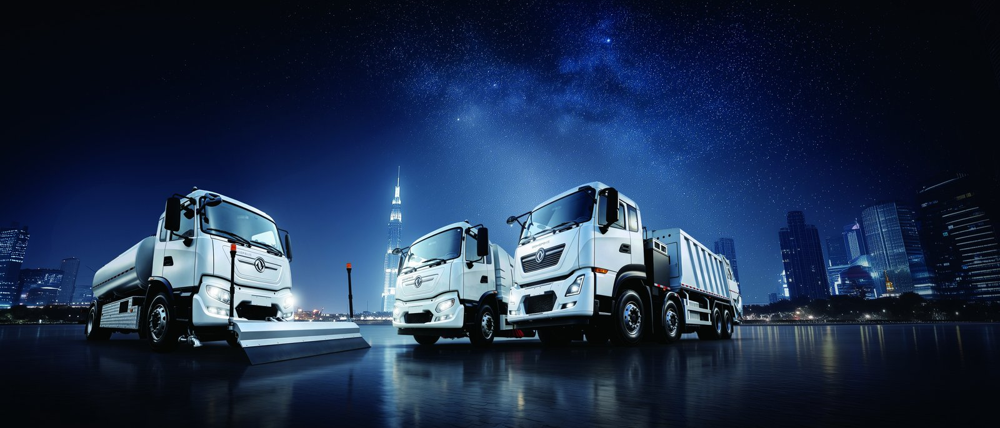

An electric truck makes driver behavior visible in a way diesels never did. Every kWh per km, every regen event and every idle minute is recorded, which means fleet managers can finally pay drivers for efficiency they can prove. Well designed bonus schemes on a Dongfeng EV routinely cut energy use 8-12 percent, paying for themselves in lower electricity and battery wear while improving driver engagement and retention at the same time. This article lays out incentive structures that work and the pitfalls to avoid when you launch the program.
Diesel efficiency was always fuzzy: fuel theft, shared tanks and vague mileage made honest pay-per-efficiency schemes hard to defend. The EV truck removes the ambiguity. Energy draw is metered per vehicle and per driver session, so a pay-per-kWh-efficiency bonus is transparent and contestable in the driver's favor. That transparency is what makes the scheme trusted rather than resented by the very people it is meant to motivate on the road.
The cleanest structure is a per-kWh-efficiency bonus: set a lane baseline, say 1.4 kWh per km, and pay a fixed amount for every percent the driver beats it, within a sane cap. Pair it with a regen-driving score that rewards smooth braking on the KT5M's 282 kWh pack, where regen recovers 15-25 percent on rolling routes. Keep the math visible in the cab display so drivers self-coach and treat the target as a game they can win fairly.
Badly designed schemes backfire. Do not penalize drivers for grade or load the system cannot control; that breeds distrust and turnover. Do not set the baseline so tight that only perfect weather beats it, or the program dies in week two. And do not hide the data, because a bonus the driver cannot see is just a management number, not a motivator that changes anything about how the truck is driven day to day.
The KT5M electric cargo truck carries a 282 kWh CATL LFP pack with an 8-year or 4,500-cycle warranty and a LvKong permanent magnet motor, delivering around 250 km of typical range, and its telematics are the foundation of any efficiency bonus program you choose to run.
| Scheme Element | KT5M Example | Expected Effect |
|---|---|---|
| Battery | 282 kWh CATL LFP | ~250 km range |
| Baseline | 1.4 kWh/km lane | Fair reference |
| Regen recovery | 15-25 pct | Score input |
| Bonus cap | Per-month limit | Prevents gaming |
| Energy saving | 8-12 pct | Typical result |
| FOB price band | $68k-$85k | Budget reference |
Launch with a pilot group, publish the rules in plain language, and pay the first bonuses on time without exception so the scheme earns credibility fast. Share the leaderboard anonymously at first, then by name once trust is built across the driver pool. Tie the program to the energy dashboard KPIs so the bonus and the measurement tell the same story, and review the baseline each season as loads and routes change with the business.
In the South Africa electric truck market, where energy cost and grid reliability are constant management concerns, efficiency bonuses on the KT5M directly protect margin and extend range between charges. Fleets report that the visible score turns driving style into a friendly competition, which sustains the 8-12 percent saving long after the novelty of the new truck has faded.
To make the scheme concrete, take a KT5M on a lane baselined at 1.4 kWh/km with a driver averaging 1.25 kWh/km, a 10.7 percent saving. At 5,000 km a month that is 750 kWh saved, worth roughly $60-$150 at $0.08-$0.20 per kWh in avoided energy, and that ignores the slower battery wear the gentler profile produces. A bonus of, say, $40-$80 a month keeps the driver happy and the fleet ahead, and the saving scales across every truck on the program. The 282 kWh CATL LFP pack and the 8-year or 4,500-cycle warranty mean the wear benefit compounds over years, not just months. Make the baseline per lane, publish the formula, and pay on time; the scheme pays for itself in the first quarter and then simply prints margin for the remainder of the contract while improving morale across the yard and reducing unwanted driver attrition meaningfully.
The risk with any bonus is decay: the novelty fades and the numbers drift back. Sustain it by rotating the leaderboard, refreshing baselines each season as loads and routes change, and tying the program to the energy dashboard so the same data drives both coaching and pay. In the South Africa electric truck market, where grid and cost pressures never let up, fleets that kept the score visible turned driving style into a lasting habit rather than a campaign. Also revisit the cap annually; as drivers improve, a fixed cap can be exceeded too easily and stop motivating, so lift it in line with the new normal. Treat the scheme as a living management system, not a one-off launch, and the 8-12 percent energy saving the EV truck makes possible becomes a permanent line of protected margin on the operating report.
Roll the program out as a pilot before fleet-wide commitment. Pick one depot or one lane, run the baseline for two weeks to learn the real numbers, then launch the bonus with a clear launch meeting and immediate first payouts. The KT5M's telematics make the pilot cheap to instrument, and a visible early win recruits skeptical drivers faster than any memo. Once the pilot proves the saving and the trust, extend lane by lane, adjusting baselines so no group feels disadvantaged by terrain. Within a quarter most fleets have the scheme running where it matters and a culture of efficient driving taking hold. The electric truck supplies the truthful data; the pilot supplies the proof; together they make the incentive program something drivers defend rather than resent, which is the only version worth building and keeping for the long haul.
Edge cases need explicit rules so the scheme stays fair. A driver assigned a heavier-than-baseline load should get a load-adjusted baseline, or the bonus punishes the wrong behavior. A new driver still learning the EV truck should get a grace period before scoring counts, so the program teaches rather than penalizes. Road closures and detours should be logged and excluded, because no bonus should reward a lucky short lane or punish an unlucky long one. The KT5M's telematics capture load and route, so these adjustments are factual, not negotiable. Write the edge-case rules into the launch document alongside the formula, and the scheme survives contact with reality. Fairness is what makes the bonus trusted; a trusted bonus is what delivers the 8-12 percent energy saving the electric truck is capable of across the whole fleet, quarter after quarter, without drift.
An EV truck bonus scheme pays for itself in energy and battery savings while lifting morale across the yard. Shaanxi Fenghan Trading Co., Ltd supplies the KT5M with the telematics your program needs and supports overseas fleets end to end. Contact us on WhatsApp +86 153 1943 1311 or sales@fenghan-trade.com for FOB pricing and a bonus-scheme template matched to your routes, drivers and energy tariff.
Ready to electrify your fleet? Contact Shaanxi Fenghan Trading — authorized Dongfeng EV truck exporter. WhatsApp: +86 153 1943 1311 | Email: sales@fenghan-trade.com | dongfengevtrucks.com
🌐 Our Network: Fenghan Trade (SAGMOTO/SHACMAN Truck Export) · SAGMOTO heavy duty diesel trucks